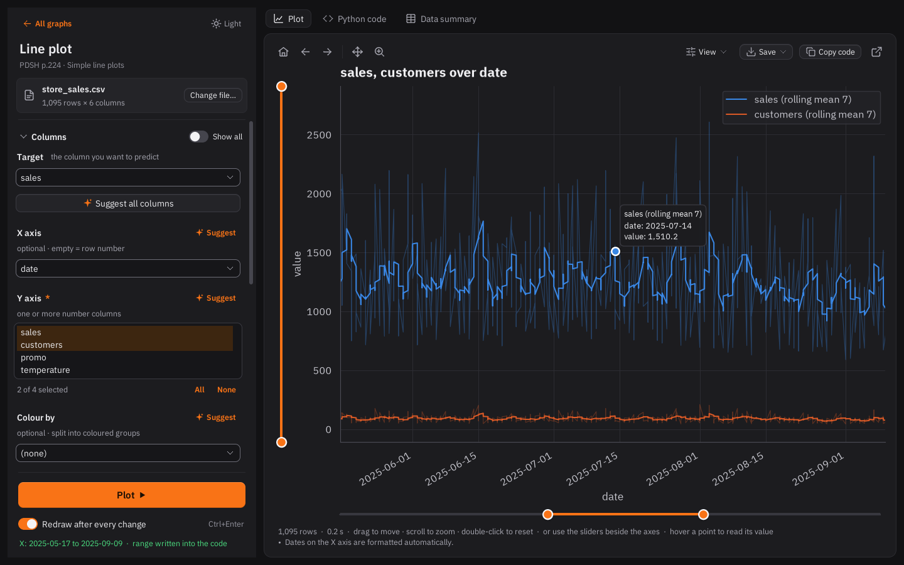

-
The app reads the delimiter, the encoding, and which columns hold numbers, groups or dates, and counts the gaps.
-
Choose one of 30 graph types. Each Suggest list ranks the columns by how strongly they link to your target, so the slots fill themselves.
-
Zoom, pan and read any point, then save it as PNG, SVG or PDF. The palette stays readable for colour-blind readers.
-
The plot comes as pandas and seaborn code, style included. Zoom with the sliders and the range is written into the code you copy.
df = pd.read_csv("store_sales.csv", parse_dates=["date"]) df["sales_7d"] = df.groupby("store")["sales"].transform(lambda s: s.rolling(7, min_periods=1).mean()) sns.lineplot(data=df, x="date", y="sales_7d", hue="store") plt.xlim(pd.Timestamp("2025-05-17"), pd.Timestamp("2025-09-09")) plt.show()
Version 3.4 for Windows and Linux. Free and open source.
Your CSV in.
A plot and its code out.
Load a file, pick one of 30 graph types and press Plot. CSV Plot Studio scans your columns, suggests what to plot first, and hands you the matplotlib code to paste into Jupyter or Kaggle.
Move the mouse: the coral line from (0, 0, 0) follows it as the regression line of the grey points around it. Scroll to draw the bell curve; it is complete at the bottom of the page. Click to push the points apart.
Inside the app
Real screenshots from version 3.4, in the dark look.

- 30 graph types from the Python Data Science Handbook plus common ML plots.
- Tables from PDFs and photos, checked in one review dialog before they are saved as CSV.
- A Notebook that reads a photo of a statistics problem and writes the worked solution, offline.
- Export to clean.py, a notebook or a Kaggle submission that rebuilds the exact table you see.
Download CSV Plot Studio
One ZIP for every computer. The first start sets up Python and the libraries it needs, so it needs an internet connection once.
Download ZIPWindows
Unzip the folder and double-click run_windows.bat. It installs Python 3.12 if the PC has none, then opens the app.
Linux Mint and Ubuntu
Unzip, open a terminal in the folder and run ./run_linux.sh. If it reports that Tkinter is missing, run sudo apt install python3-tk once.
Reviews
Tried it? Tell other people what worked and what didn't. Sign in with GitHub to post.
Reviews are not switched on for this page yet. Write your review on GitHub instead.